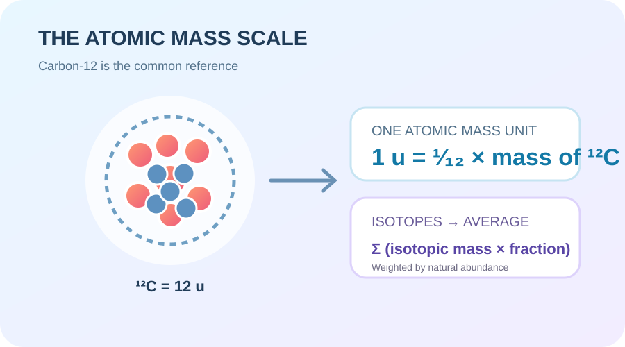

📌 1. Atomic mass unit (u)
One unified atomic mass unit is exactly one-twelfth of the mass of one carbon-12 atom.
1 u = ¹⁄₁₂ × mass of ¹²C
Carbon-12 has a mass of exactly 12 u by definition. The symbol u is also called dalton (Da).
How do we compare the tiny masses of atoms? Use carbon-12 as a common reference and express atomic masses on a relative scale.

One unified atomic mass unit is exactly one-twelfth of the mass of one carbon-12 atom.
Carbon-12 has a mass of exactly 12 u by definition. The symbol u is also called dalton (Da).
It compares the average mass of an atom of an element with ¹⁄₁₂ of the mass of a carbon-12 atom.
Relative atomic mass is a ratio, so it has no unit.
Isotopes are atoms of the same element with the same proton number but different neutron numbers.
Periodic-table atomic mass is generally a weighted average of naturally occurring isotopic masses.
Convert percentage abundance to a fraction by dividing by 100.
Isotopes: ³⁵Cl (75%) and ³⁷Cl (25%).
Average = (35 × 0.75) + (37 × 0.25) = 35.5 u.
Isotopic masses are 10 u and 11 u, each with 50% abundance.
Average = (10 × 0.50) + (11 × 0.50) = 10.5 u.
An isotope has mass number 23 and atomic number 11.
Neutrons = 23 − 11 = 12.
| Element | Approx. atomic mass (u) |
|---|---|
| Hydrogen | 1 |
| Carbon | 12 |
| Nitrogen | 14 |
| Oxygen | 16 |
| Sodium | 23 |
| Magnesium | 24 |
| Sulphur | 32 |
| Chlorine | 35.5 |
| Calcium | 40 |